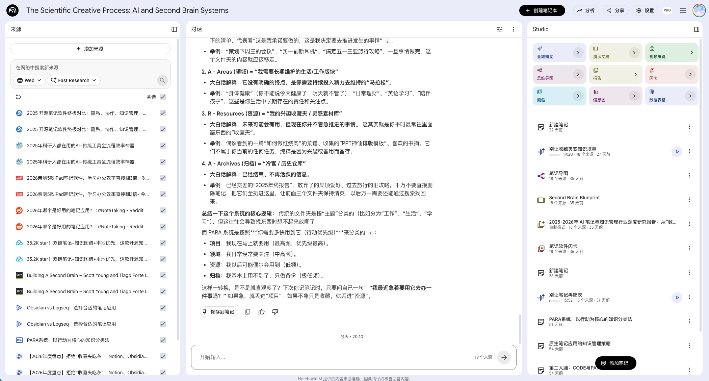
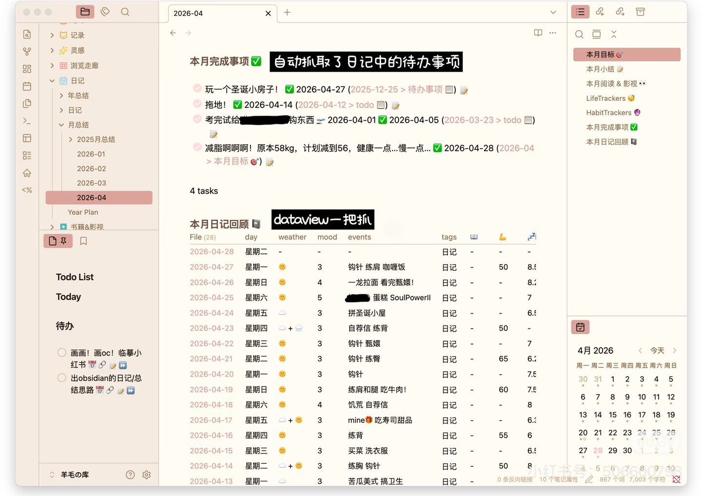
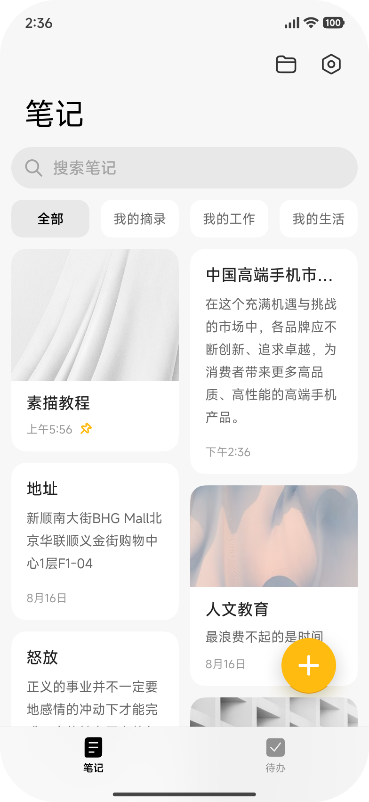
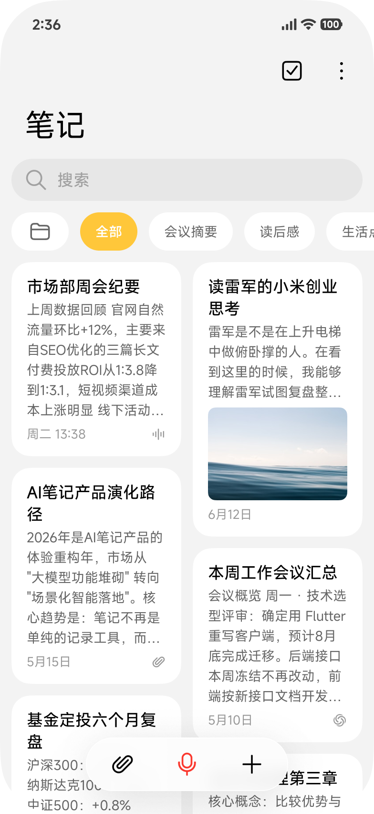

不是"加 AI 功能"，而是把系统笔记重新定义为以语音速记为核心的 AI 笔记——开口就记、AI 全程加工，借小米生态沉淀成越用越懂你的个人内容数据库。
1
语音速记入口
开口就记，门槛最低，随时随地都能记
2
AI 加工中枢
记录 / 整理 / 查找全链路，AI 自动完成
3
个人数据库沉淀
全端内容汇聚，越攒越多、越用越值钱
4
MiClaw 调用放大
数据库被系统 AI 调用，越用越懂你
开口就记，门槛最低，随时随地都能记
记录 / 整理 / 查找全链路，AI 自动完成
全端内容汇聚，越攒越多、越用越值钱
数据库被系统 AI 调用，越用越懂你


| 用户痛点 | 产品必须做到（定位的一环） |
|---|---|
| 记录"接不住"：打字慢、易被打断 | 入口零门槛 → 以语音速记为核心，开口就记 |
| 整理"理不好"、调用"用不起来" | 全程不用手动 → AI 全链路加工（记录 / 整理 / 查找） |
| 内容"沉不下"：散落、攒不住 | 攒得下、用得上 → 沉淀成个人数据库（靠小米生态全端汇聚） |
| 参照对象 | 可借鉴 | 局限性 |
|---|---|---|
| 系统备忘录 | 入口轻、系统预装、记录成本低 | 仍以手动输入、静态文档为主 |
| 三方笔记 | 资料级 AI 问答（NotebookLM）、双链知识图谱（Obsidian） | 要手动导入、是独立工具，无系统级入口 |
| AI 助手 | 自然语言交互、生成、总结强 | 停留在一次性对话，缺沉淀 |


| 范式 | 老笔记 | 新一代 AI 语音笔记 | 为什么是根本变化 |
|---|---|---|---|
| 交互范式 怎么记 | 打字、层层点按 | 开口就说，语音优先、跨端随手记 | 门槛从"会打字会分类"降到"会说话" |
| 分工范式 谁来干活 | 你自己整理、自己找 | AI 全程代劳，你只做判断 | 用户从"操作员"变成"决策者" |
| 数据范式 记成什么 | 一篇篇孤立静态文档 | 可被 AI 调用的个人数据库 | 从"文件"变成"能被 Agent 调用的数据" |
| 价值范式 有啥用 | 存了就忘、越存越乱 | 越用越值钱的个人资产 | 价值逻辑从"存储"变成"复利" |
长按 AI 键说一句就记；网页 / 微信读书 / 截图一键收
抬手或语音就记，走路途中的想法也接得住（耳机 / 车机为后续）
通话录音自动生成纪要，一键保存进笔记
从用户洞察反推定位，交互 / 分工 / 数据 / 价值四范式整体重做——不做 AI 叠加。
能力 tools 化、与 MiClaw 打通，多端内容统一汇聚成个人数据库——不做孤岛。
PM 先写 demo 先验证、AI coding 生成代码、产研一体当天决策——不做瀑布。
| 工种 | 成员 | 主要职责 |
|---|---|---|
| 产品 | 【产品团队成员】 | 定位重构、产品规划、0→1 生成 / 搜索 / 多模态 / 跨端 / MiClaw 结合需求 |
| 设计 | 【设计师姓名】 | 交互与视觉设计、原型走查、体验把控 |
| 开发 | 【研发负责人 + 核心研发】 | AI coding 应用重写、日更机制、AI 能力落地 |
| 测试 / 数据 | 【测试 / 数据负责人】 | 质量保障、灰度验证、日更回归、数据看板 |